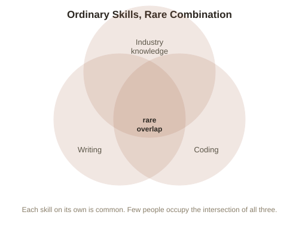

Chapter 4: Which Skills Actually Compound
Chapter 3 closed on a pointed question: skills and knowledge compound too, but not all of them at the same rate — some barely compound at all. This chapter is about telling the difference, since it changes where effort is actually worth investing.
Why some skills plateau and others compound
A skill that's fully commoditized (widely taught, easily verified, easily substituted between different people who have it) tends to plateau in value once you're reasonably competent — being the 90th-percentile typist earns barely more than being 60th-percentile, because the task itself doesn't reward the extra skill much, and there are plenty of substitutes. A skill that compounds tends to have the opposite structure: each additional bit of ability multiplies with what's already there rather than just adding to it, because it's combined with judgment, reputation, or a growing base of prior work that makes the next unit of effort more valuable, not less. Writing is a clean example — an early piece of writing earns little audience and little credibility, but each piece afterward can be read by people who found the previous ones, and can reference and build on the ideas established earlier, so a body of work becomes worth more than the sum of its individual pieces.
The generalist-specialist question, reframed
The classic "should I specialize deeply or stay broad" debate gets more useful once reframed around compounding specifically: deep specialization compounds fastest within a narrow, well-defined skill that has real scarcity (few people can do it, and it can't be trained quickly) — but a T-shaped (broad competence across many areas, with one or two areas of real depth) profile compounds differently, through the multiplication of otherwise-ordinary skills combined in an unusual way nobody else has assembled. Someone who's a decent writer, a decent programmer, and understands a specific industry well isn't world-class at any one of the three — but that specific combination might be rare enough that almost nobody else occupies it, which is its own form of scarcity, achieved through breadth rather than depth in any single skill.

The honest caveat: compounding takes a floor of real competence first
None of this works as an excuse to stay superficial in everything. A combination of three skills someone is only weakly competent in doesn't compound into anything — it's the specific combination of genuinely useful, individually solid skills that creates scarcity. The T-shaped strategy is a claim about which additional skills are worth building once a real floor of competence exists somewhere, not a substitute for building that floor in the first place.
Try this
Ideas for noticing or testing this in your own life.
- List three or four skills you have that are each individually solid, not necessarily elite: is there a combination among them that few other people share? That intersection, not any single skill in isolation, is often where real scarcity actually sits.
Worth pulling on?
A few loose threads from this chapter — if any of these genuinely grab you, that's a good sign of where to go next.
- Chapter 1's BATNA concept only scratched the surface of negotiation leverage — there's more to how the first offer and information asymmetry shape a deal. → Picked up directly in Chapter 5.